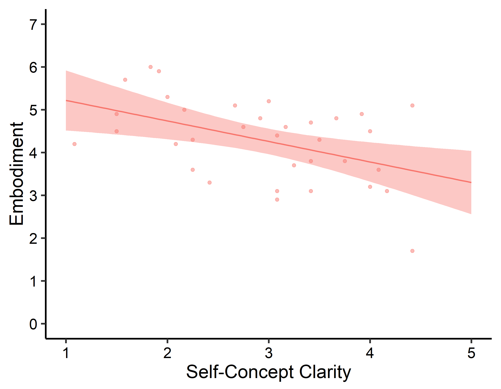
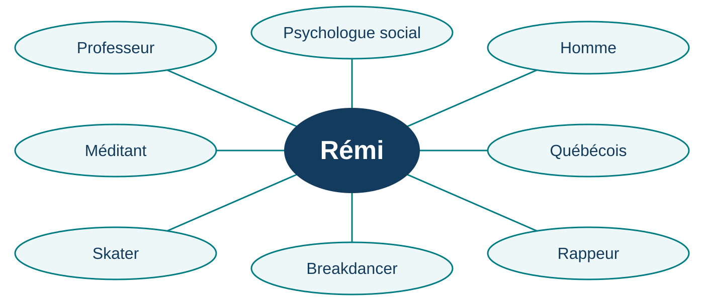
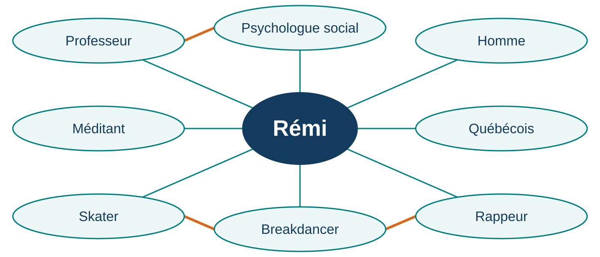
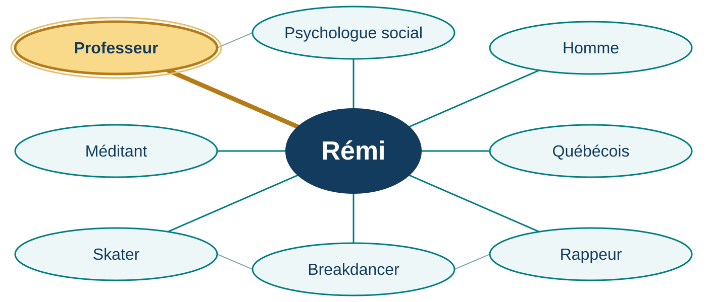
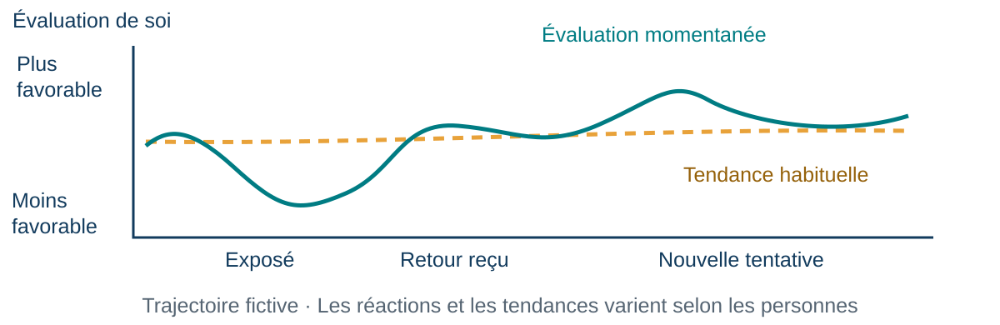

22 septembre — Quiz 2 (1,25 %) : chapitre 3 et cours 3.
Les 8 meilleurs quiz sur 10 comptent pour 10 % de la note finale.
29 septembre — Examen 1 (25 %) : chapitres 1–4 et cours 1–4.
50 % des questions viendront du matériel du cours vu en classe
50 % des questions viendront du matériel du manuel (même si la matière n’a PAS été vue en classe)
Certaines notions enseignées en cours peuvent être évaluées même si elles ne figurent pas sur les diapositives et qu’il s’agisse de quelque chose dont nous avons simplement discuté. Cependant, en majorité, je m’en tiens au manuel et aux diapositives. Toute autre ressource ou lien externe n’est pas matière à examen.
Mes stratégies d’étude du bac 1/2 : comprendre la structure
Avant de lire : parcourir le chapitre du début à la fin.
À l’échelle du chapitre
Repérer la longueur, les titres, les sous-titres et les grandes parties, sans encore lire le détail.
À l’échelle d’une section
Refaire ce survol avant de lire; y revenir pendant la lecture pour situer sa progression.
Chapitre → sections → idées → détails
La lecture vient remplir une structure que l’on commence déjà à connaître.
Mes stratégies d’étude du bac 2/2 : scanner et faire le tri
Lecture RAPIDE : (ne perdez pas de temps sur les détails; comprenez l’essentiel)
Distinguez ce qui est IMPORTANT, de ce qui ne l’est pas
Distinguez ce qui est AUTONOME, de ce qui ne l’est pas (ce qui est logique ou qui vient à l’esprit facilement)
SIMPLIFIEZ tout ce qui reste (listes à puces, trucs mnémotechniques; essayez de conserver aussi peu d’information que possible)
BOUCLEZ la BOUCLE (organisez et regroupez les éléments de manière à se faire une idée claire de la vue d’ensemble, de la façon dont les thèmes ou les idées s’articulent entre eux et dans quel ordre, ainsi que des « limites » du contenu)
MÉMORISEZ ce qu’il reste
Enregistrer les diapositives en PDF
Pour conserver une copie et faciliter la prise de notes :
Ouvrez le menu « hamburger » (trois barres) des diapositives.
Cliquez sur Tools.
Choisissez PDF Export Mode.
Appuyez sur Ctrl + P (ou ⌘ + P sur Mac).
Choisissez Enregistrer au format PDF, ajustez le nombre de pages par feuille, puis enregistrez.
Plan de la séance
Le soi comme contenu — soi corporel, concept de soi, schémas et estime de soi
Les sources du soi — apprendre à se connaître par soi-même et par les autres
Le soi comme processus et ses conséquences — conscience de soi, autorégulation et présentation de soi
Pour commencer : expérimenter son corps et se représenter soi-même.
Voir l’expérience
Soi corporel vs soi conceptuel
Soi corporel : l’expérience de son corps comme sien, situé ici, capable d’agir.
Soi conceptuel : ce que l’on se représente à propos de soi.
« Cette main est la mienne » et « je suis habile de mes mains » concernent le même corps, sous deux angles différents.
Un concept de soi peut être plus ou moins clair
Clarté du concept de soi : des croyances sur soi clairement définies, cohérentes entre elles et relativement stables dans le temps.
Clarté : « Est-ce que je sais comment je me décris? »
Estime : « Quelle valeur est-ce que je m’accorde? »
Un portrait clair n’est pas nécessairement favorable, exact ou immuable.
La clarté est associée au bien-être.
Clarté du soi et sentiment de propriété de corps

Horizontal : clarté du concept de soi.
Vertical : sentiment que le corps vu est le sien.
Une clarté plus faible est associée à un sentiment de propriété de corps plus fort.
Krol, Thériault, Olson, Raz et Bartz (2020), figure 3. Original fourni par Rémi Thériault.
Le soi comme contenu
Deux façons d’étudier le soi
Le soi comme contenu
Le soi comme processus
Ce que je me représente à propos de moi
Les activités par lesquelles je prends conscience de moi et j’agis
Concept de soi, schémas, estime de soi
Attention à soi, régulation, présentation de soi
Le « moi » connu et le « je » connaissant sont deux angles sur une même personne.
Le concept de soi : que contient-il?
« Ensemble des représentations sur soi. »
Vallerand (2021), glossaire, p. 439 — définition citée.
Contenu
Exemple
Trait que je m’attribue
« Je suis persévérante. »
Valeur ou conviction
« L’entraide est importante pour moi. »
Rôle ou appartenance
« Je suis étudiante en psychologie. »
Représentation corporelle
« Je me trouve grande. »
Qui suis-je? · 10 réponses
Sur une feuille (ou votre ordinateur, votre téléphone), écrivez 10 réponses à la question « Qui suis-je? », en commençant par « Je suis… ».
Écrivez ce qui vous vient, sans chercher le portrait idéal.
Gardez votre liste : nous y reviendrons. Vous choisissez ce que vous partagez.
Les schémas sur le soi
Des connaissances organisées, issues de nos expériences, qui orientent le traitement de l’information sur soi.
« Être sportive me définit. »
Cette dimension relie des souvenirs, des attentes et des façons d’interpréter une nouvelle expérience.
Le concept de soi désigne les représentations; les schémas expliquent leur organisation et leur influence.
Vallerand (2021), p. 67–69 et glossaire, p. 447 — définition synthétisée.
Une carte de mon soi

Ces éléments du soi sont-ils reliés entre eux?
Des facettes reliées entre elles

Quelle facette devient saillante lorsque j’enseigne?
Quand j’enseigne

En classe, ma facette « professeur » devient saillante.
Une étude classique : les schémas sur le soi
Markus (1977) · Des étudiantes sont sélectionnées selon leur rapport à l’indépendance : schéma d’indépendance, de dépendance, ou absence de schéma marqué.
Elles voient des adjectifs et indiquent « moi » / « pas moi ». On mesure notamment le temps de réponse.
Par exemple : indépendante, autonome, conformiste, dépendante.
Pour quels adjectifs répondra-t-on « moi » le plus rapidement?
Quand l’information correspond à notre schéma
Schéma préalable
Réponses « moi » plus rapides pour…
Indépendance
Les adjectifs d’indépendance
Dépendance
Les adjectifs de dépendance
Une même tâche révèle des façons différentes de traiter l’information sur soi.
Markus (1977), étude 1. Résultats qualitatifs; aucune valeur simulée.
Quand le « nous » entre dans le soi
Se définir par…
Exemple
Un trait personnel
« Je suis curieuse. »
Une relation
« Je suis l’amie de cette personne. »
Une appartenance collective
« Je fais partie des Bleus / des Ors. »
Que change une appartenance dans ce qui compte pour nous?
L’estime de soi
L’évaluation subjective, positive ou négative, que l’on fait de soi-même.
Un jugement global
« Dans l’ensemble, je suis satisfait de moi. »
Une attitude envers soi-même
« J’ai une attitude positive vis-à-vis de moi-même. »
Ici, on évalue la personne dans son ensemble, pas seulement un comportement.
Vallerand (2021), p. 64–67 et tableau 3.2 — items de l’échelle de Rosenberg.
L’estime de soi : préciser de quoi on parle
Distinction
Exemple de question
Globale ou propre à un domaine
Ma valeur générale ou ma satisfaction comme étudiante?
Disposition ou état
Habituellement ou après cet exposé?
Individuelle, relationnelle ou collective
Moi, ma place dans une relation ou mon appartenance?
Une réaction située ne résume pas la personne.
L’estime de soi au fil des événements

Un moment de déception suffit-il à décrire une disposition?
Quand une image de soi est menacée
Se reconnaître de la valeur et se croire supérieur aux autres sont distincts.
Dans les expériences de Bushman et Baumeister (1998), l’association du narcissisme et d’une insulte s’accompagne d’une agressivité particulièrement élevée envers l’auteur de l’insulte.
Bushman et Baumeister (1998), https://doi.org/10.1037/0022-3514.75.1.219.
Retour à vos 10 réponses
Repérez, sans les partager si vous préférez :
une caractéristique, un rôle ou une appartenance;
une description de vous-même;
une éventuelle évaluation de vous-même.
Une même phrase peut contenir plusieurs éléments.
Connectez-vous à Wooclap
Scannez le code QR, ou rendez-vous sur wooclap.com.
Code : NFMQCOD
Connectez-vous avec votre identifiant UQAR.
Gardez l’onglet ouvert : les questions apparaîtront dans Wooclap au fil de l’activité.
Ronde 1 · Les questions sont présentées dans Wooclap.
« Je suis membre de l’équipe de débat. » Cette phrase exprime surtout :
A. Une description de soi B. Une évaluation de sa valeur C. Une preuve de compétence en débat
Ronde 1 · Ce qu’une phrase permet de conclure
« Je me sens déçu de moi après cet exposé. » Que peut-on conclure?
A. La personne a toujours une faible estime de soi B. Elle exprime une évaluation négative dans cette situation C. Son exposé était objectivement mauvais
Pause 1 — 10 minutes
Scannez le code QR, ou rendez-vous sur wooclap.com.
Code : NFMQCOD
Connectez-vous avec votre identifiant UQAR.
Gardez l’onglet ouvert : les questions apparaîtront dans Wooclap au fil de l’activité.
Une même rétroaction, plusieurs interprétations
Une personne reçoit : « Ton argument serait plus clair avec un exemple. »
En binôme de la même équipe (trio si nécessaire), préparez :
deux interprétations possibles;
une information qui aiderait à les départager;
une façon de demander une précision.
Production : trois phrases. Une personne porte-parole par équipe présente une proposition.
Les sources du soi
D’où viennent nos idées sur nous-mêmes?
Source
Question que l’on peut se poser
Introspection
Que ressens-je? Qu’est-ce que je pense?
Observation de ses comportements
Qu’est-ce que mes actions m’apprennent?
Autrui
Que me renvoient les autres? À qui me comparer?
Souvenirs autobiographiques
Quel récit est-ce que je fais de mon passé?
Culture
Quels rôles et quelles façons d’être sont valorisés?
Organisation inspirée du cours de Sullivan; liens avec Vallerand (2021), p. 69–79 et 84–85.
Théorie de l’autoperception (Bem)
Nous pouvons inférer nos attitudes à partir de nos comportements et de leur contexte.
« J’ai proposé mon aide plusieurs fois; peut-être que je suis serviable. »
Selon Bem, nos comportements deviennent particulièrement informatifs lorsque :
nos indices internes sont faibles ou ambigus;
une pression extérieure n’explique pas déjà l’action.
Aider volontairement ou parce qu’on l’exige : même indice?
Vallerand (2021), p. 69–70 et glossaire, p. 449 — définition synthétisée.
Une expérience sur l’autoperception
Chaiken et Baldwin (1981) · Des questionnaires rendent saillants des comportements passés favorables ou défavorables à l’écologie.
Attitude préalable
Résultat de la manipulation
Peu définie
L’attitude exprimée varie dans le sens des comportements évoqués
Bien définie
Ce même effet n’est pas observé
Ce que je me rappelle de mes actions peut informer ce que je pense de moi.
Le regard des autres est interprété
« Mes collègues me demandent d’expliquer les consignes. »
Je peux y voir de la compétence… ou simplement de la disponibilité.
L’autovérification : rechercher une confirmation de l’idée que l’on a déjà de soi.
Confirmer son idée de soi et rechercher une image plus favorable peuvent conduire à des choix différents.
La comparaison sociale : dans quel but?
Évaluer ses opinions ou capacités en se comparant à autrui.
But
Point de comparaison possible
M’évaluer
Une personne aux conditions semblables
M’améliorer
Une personne qui réussit mieux
Me revaloriser
Une personne qui réussit moins bien
Comparer vers le haut peut inspirer ou décourager. Le sens dépend du contexte.
Vallerand (2021), p. 71–72 et glossaire, p. 439 — définition synthétisée.
Une expérience : qui se trouve en face de moi?
Morse et Gergen · Des candidats à un emploi rencontrent un autre candidat joué par un complice.
Présentation du complice
Variation de l’estime de soi rapportée
Soignée, assurée, préparée
Baisse
Négligée, désorientée
Hausse
La comparaison modifie l’évaluation de soi sans modifier les qualifications du candidat.
Se souvenir de soi : reconstruire son passé
Les souvenirs autobiographiques concernent les événements de notre propre vie.
Le rappel sélectif peut rendre le récit du passé plus cohérent avec l’image actuelle de soi.
« Maintenant que je me vois comme sociable, quelles rencontres me viennent d’abord en mémoire? »
Vallerand (2021), p. 84–85 et glossaire, p. 447 — définition synthétisée.
Culture et contexte : quelles facettes du soi?
Le soi peut être défini davantage par :
ses caractéristiques et ses choix personnels (indépendance);
ses relations et ses obligations envers autrui (interdépendance).
Ces orientations varient entre personnes et selon les contextes.
Une nationalité ne permet pas de déduire le soi d’une personne.
Le soi comme processus et ses conséquences
Le soi comme processus : porter attention à soi
Conscience de soi : état dans lequel l’attention se porte sur des aspects de soi-même.
Le contenu devient alors un objet d’attention : une valeur, une émotion, une apparence, un comportement.
« Je suis patiente » est une représentation. « Je remarque mon impatience » est une activité d’attention à soi.
Vallerand (2021), p. 81–83 et glossaire, p. 439 — définition synthétisée.
Porter attention à soi : privé ou public?
Conscience de soi privée
Conscience de soi publique
Attention aux aspects de soi peu visibles pour autrui : pensées, émotions, valeurs
Attention aux aspects susceptibles d’être observés ou évalués par autrui
« Suis-je en accord avec ce que je dis? »
« Quelle impression est-ce que je donne? »
On peut éprouver les deux dans la même situation.
Vallerand (2021), p. 81–83 et glossaire, p. 439–440 — définitions synthétisées.
Pause 2 — 10 minutes
Scannez le code QR, ou rendez-vous sur wooclap.com.
Code : NFMQCOD
Connectez-vous avec votre identifiant UQAR.
Gardez l’onglet ouvert : les questions apparaîtront dans Wooclap au fil de l’activité.
« Je peux le faire » : l’autoefficacité
Une croyance dans sa capacité à réaliser une tâche précise.
« Je peux formuler une question claire » diffère de « Je suis une personne de valeur ».
Quatre sources possibles :
expériences de réussite;
observation d’autres personnes;
persuasion verbale;
indices émotionnels et physiologiques.
Vallerand (2021), p. 89 et glossaire, p. 438 — définition synthétisée.
L’autorégulation : tester, agir, tester, sortir
Modifier ses états internes ou ses comportements en fonction d’un but.
Exemple : vérifier sa compréhension d’une notion.
Tester : puis-je l’expliquer sans mes notes?
Agir : revoir le passage qui me pose problème.
Tester : puis-je maintenant l’expliquer?
Sortir si le but est atteint; sinon, ajuster l’action.
Vallerand (2021), p. 93–94 et glossaire, p. 438 — définition synthétisée.
Se sentir mieux ou mieux réguler son action?
Baumeister : « Rethinking Self-Esteem »
Augmenter l’estime de soi ne garantit pas, à lui seul, une amélioration des comportements ou des compétences.
D’où sa proposition : accorder davantage de place au contrôle de soi.
Cela ne signifie pas que l’estime de soi est sans bénéfices.
Baumeister, « Rethinking Self-Esteem »; mise en perspective : Orth et Robins (2022).
Le contrôle de soi
Réguler ses réponses lorsqu’une impulsion entre en conflit avec un but.
« Je veux terminer cette lecture, mais j’ai envie de consulter mon téléphone. »
Éloigner le téléphone ou modifier ses notifications peut changer la difficulté de la situation.
Le contrôle de soi inclut les stratégies que l’on met en place.
Contrôle de soi : déplacer son attention
Mischel, Ebbesen et Zeiss (1972) · Des enfants peuvent obtenir une récompense moins appréciée maintenant ou attendre pour une récompense préférée.
Attention centrée sur les récompenses
Distraction externe ou pensée agréable
Attente plus courte
Attente plus longue
La stratégie utilisée fait partie du contrôle de soi.
Soutenir une action choisie
Trois besoins dans la théorie de l’autodétermination :
Autonomie : agir avec un sentiment de choix.
Compétence : se sentir capable de progresser.
Appartenance sociale : se sentir relié aux autres.
Dans un cours, qu’est-ce qui pourrait rendre la participation plus volontaire?
La présentation de soi
Les conduites par lesquelles on influence l’image que les autres se font de nous.
Stratégique : orienter l’impression produite.
Alex met en avant son expérience de bénévolat auprès d’une nouvelle équipe.
Authentique : présenter aux autres des aspects réels de soi pour se faire connaître.
Ces deux intentions peuvent coexister.
Vallerand (2021), p. 100–104 et glossaire, p. 446 — définitions synthétisées.
L’autocompassion face à une difficulté
Se traiter avec compréhension et bienveillance lorsque l’on souffre ou rencontre une difficulté.
Bienveillance envers soi : répondre à sa difficulté avec compréhension.
Humanité commune : reconnaître que les difficultés font partie de la vie humaine.
Pleine conscience : reconnaître l’expérience sans s’y laisser entièrement absorber.
Exemple : « Cet exposé a été difficile. Je peux reconnaître ma déception et préparer la suite. »
Estime, efficacité, contrôle et compassion pour soi
Notion
Question centrale
Estime de soi
Quelle valeur est-ce que je m’accorde?
Autoefficacité
Est-ce que je me crois capable de réaliser cette tâche?
Contrôle de soi
Comment réguler une impulsion qui s’oppose à mon but?
Autocompassion
Comment me traiter lorsque je rencontre une difficulté?
Se valoriser, se croire capable, se réguler et se traiter avec bienveillance sont distincts.
Distinguer les notions dans une situation
Après un résultat décevant, une personne pense :
« Ce résultat ne résume pas ma valeur. »
« Je crois pouvoir mieux expliquer ce chapitre. »
« Je vais m’organiser pour éviter les distractions. »
« Je peux reconnaître ma difficulté sans me dénigrer. »
Associez chaque phrase à une notion et justifiez votre choix.
Ouverture : notre rapport aux descriptions de soi
« Je suis formidable » / « Je suis sans valeur »
Peut-on, dans les deux cas, s’attacher rigidement à un jugement sur soi?
« Je remarque que je porte un jugement sur moi. »
Une question contemplative, inspirée notamment du bouddhisme : que change cette prise de recul?
Connectez-vous à Wooclap
Scannez le code QR, ou rendez-vous sur wooclap.com.
Code : NFMQCOD
Connectez-vous avec votre identifiant UQAR.
Gardez l’onglet ouvert : les questions apparaîtront dans Wooclap au fil de l’activité.
Ronde 2 · Les questions sont présentées dans Wooclap.
Une personne se croit peu créative. Elle préfère un retour crédible qui confirme ce portrait à un retour tout aussi crédible qui souligne son originalité. Cela illustre surtout :
A. L’autovérification B. La recherche d’une image plus favorable C. Une mesure objective de sa créativité
Ronde 2 · Changer de comparaison
Une personne obtient le même résultat à deux exercices, mais se compare à des personnes différentes. Qu’est-ce qui peut changer?
A. Le résultat déjà obtenu B. L’interprétation qu’elle fait de ce résultat C. Nécessairement sa personnalité
Ronde 2 · Répondre à une difficulté
Une personne reconnaît sa déception sans se dénigrer, puis reprend son travail malgré son envie de l’éviter. Quelles dimensions sont illustrées?
A. Autocompassion et contrôle de soi B. Narcissisme et comparaison sociale C. Estime de soi élevée et compétence démontrée
Ronde 2 · Ajuster son action
Une personne révise un passage, puis vérifie si elle comprend mieux la notion. Cette dernière étape illustre :
A. Le second test dans la boucle d’autorégulation B. Une mesure de sa valeur personnelle C. Une preuve que les autres l’apprécient
Trois acquis à emporter
Distinguer concept de soi, schémas sur le soi et estime de soi.
Expliquer comment les comportements, autrui, les souvenirs et la culture façonnent le soi.
Reconnaître la conscience de soi, l’autorégulation et la présentation de soi dans une situation concrète.
Quiz et examen — quoi préparer?
22 septembre — Quiz 2 (1,25 %) : chapitre 3 et cours 3.
Les 8 meilleurs quiz sur 10 comptent pour 10 % de la note finale.
29 septembre — Examen 1 (25 %) : chapitres 1–4 et cours 1–4.
50 % des questions viendront du matériel du cours vu en classe
50 % des questions viendront du matériel du manuel (même si la matière n’a PAS été vue en classe)
Certaines notions enseignées en cours peuvent être évaluées même si elles ne figurent pas sur les diapositives et qu’il s’agisse de quelque chose dont nous avons simplement discuté. Cependant, en majorité, je m’en tiens au manuel et aux diapositives. Toute autre ressource ou lien externe n’est pas matière à examen.
Pour la prochaine séance
22 septembre · La cognition sociale
Lecture : Vallerand, chapitre 4
Comment sélectionnons-nous et interprétons-nous l’information sociale?